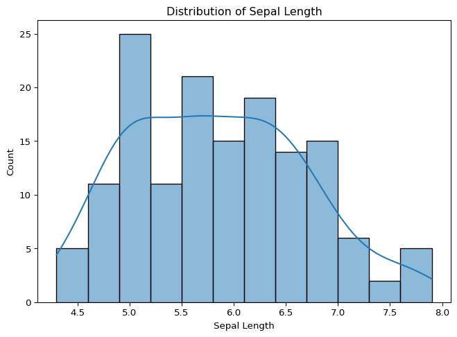
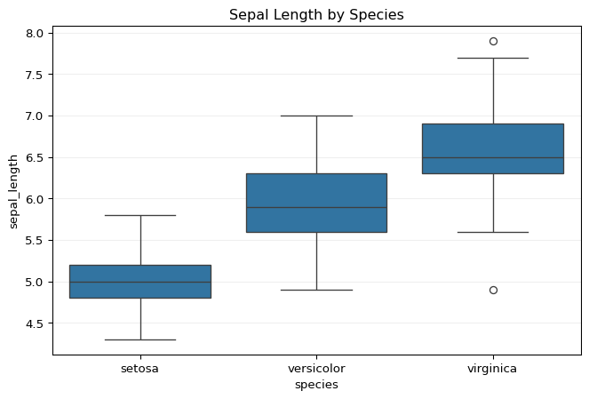

from cdi_viz.theme import cdi_notebook_init, show_and_save_mpl
cdi_notebook_init(chapter="05", title_x=0)Visualization Basics
Visualization is one of the most powerful tools in data science.
It allows you to:
- Understand distributions
- Detect patterns and relationships
- Identify anomalies
- Communicate findings clearly
As in previous chapters, all code runs inside this Quarto (.qmd) file and executes when you render the book.
Lesson Overview
By the end of this lesson, you will be able to:
- Create histograms and boxplots
- Build scatter plots
- Visualize grouped comparisons
- Customize plot titles and labels
- Save figures reproducibly
Chapter Initialization
Load the Clean Dataset
import pandas as pd
df = pd.read_csv("data/iris_clean.csv")
df.head()| sepal_length | sepal_width | petal_length | petal_width | species | |
|---|---|---|---|---|---|
| 0 | 5.1 | 3.5 | 1.4 | 0.2 | setosa |
| 1 | 4.9 | 3.0 | 1.4 | 0.2 | setosa |
| 2 | 4.7 | 3.2 | 1.3 | 0.2 | setosa |
| 3 | 4.6 | 3.1 | 1.5 | 0.2 | setosa |
| 4 | 5.0 | 3.6 | 1.4 | 0.2 | setosa |
Histogram
Histograms help us understand the distribution of a variable.
import matplotlib.pyplot as plt
fig, ax = plt.subplots(figsize=(8, 5))
ax.hist(df["sepal_length"], bins=12)
ax.set_title("Distribution of Sepal Length")
ax.set_xlabel("sepal_length")
ax.set_ylabel("Frequency")
ax.grid(True, alpha=0.2)
show_and_save_mpl(fig)
'figures/05_001.png'Boxplot
Boxplots highlight spread and potential outliers.
import seaborn as sns
fig, ax = plt.subplots(figsize=(8, 5))
sns.boxplot(data=df, x="species", y="sepal_length", ax=ax)
ax.set_title("Sepal Length by Species")
ax.grid(True, axis="y", alpha=0.2)
show_and_save_mpl(fig)
'figures/05_002.png'Scatter Plot
Scatter plots reveal relationships between two variables.
fig, ax = plt.subplots(figsize=(8, 5))
sns.scatterplot(
data=df,
x="sepal_length",
y="petal_length",
hue="species",
ax=ax
)
ax.set_title("Sepal Length vs Petal Length")
ax.grid(True, alpha=0.2)
show_and_save_mpl(fig)
'figures/05_003.png'Pairplot Overview
Pairplots provide a quick overview of relationships between multiple variables.
g = sns.pairplot(df, hue="species", corner=True, plot_kws={"alpha": 0.7})
g.fig.suptitle("Iris — Pairplot Overview", y=1.02)
show_and_save_mpl(g.fig)
'figures/05_004.png'Visualization Best Practices
- Label axes clearly
- Use meaningful titles
- Avoid unnecessary decoration
- Keep plots readable
- Maintain consistent styling
Summary
- You created histograms, boxplots, and scatter plots
- You visualized grouped comparisons
- You applied consistent styling
- You saved figures reproducibly using the CDI visualization utilities
You are now prepared to generate structured insights from visual evidence.